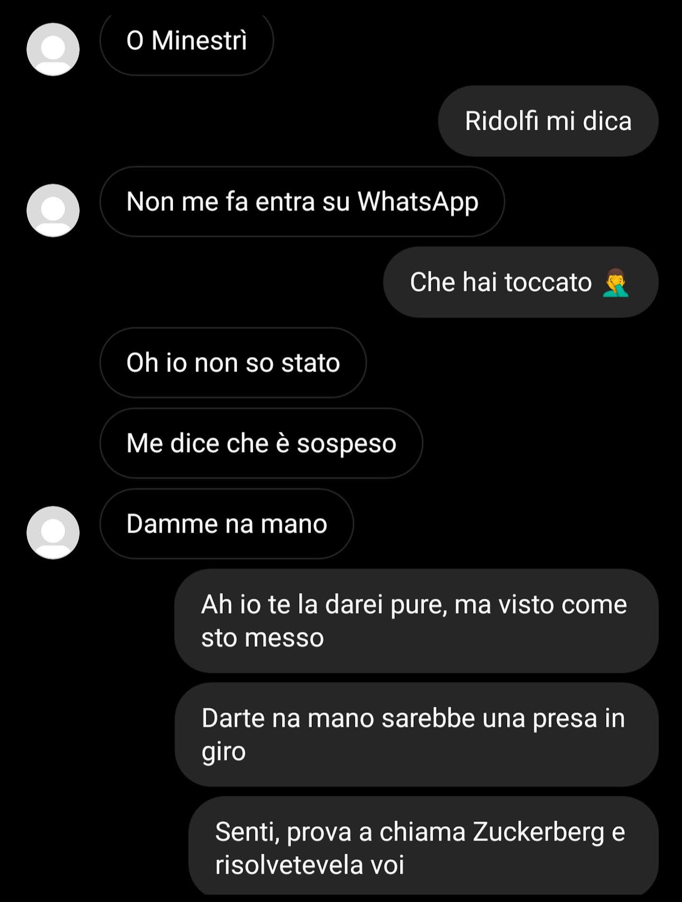

Scandalo Ridolfi. Sospeso l'account WhatsApp del Presidente
Purtroppo è difficile immaginare un inizio anno peggiore per il nostro Baianese preferito.
🕑 28/01/2022
Sembra incredibile che al giorno d'oggi figure di un certo spessore possano essere escluse da mezzi di comunicazione tanto importanti
nella vita quotidiana senza spiegazioni. Senza conseguenze...
La prima notizia del 2022 ci racconta come qualche giorno fa, Alessandro Flavio Ridolfi non solo si sia trovato in isolamento nel bunker
(
per la seconda volta) causa contatto con un positivo al Covid-19, ma si sia anche ritrovato chiuso fuori dalle porte di una
tra le più usate piattaforme di messaggistica di casa Meta: stiamo ovviamente parlando di
WhatsApp.
Non essendo ancora chiaro il motivo di tale timeout, non ci resta che ascoltare le versioni dei nostri testimoni.
[25/02/2022] «Se che scandalu... io non c'agghio più manco le parole... Ma io dico no ma che je dice lu pensiero a sti 4 buzzurri de wuotsap e pe primo
a quillu rincujunitu de Zuccheberghe. Stemo parlanno de na sospensione de uno Accaunt de Alessandro Ridolfi, lu vaianese pe' eccellenza, ma dico ce rendemo conto??
So tre jorni che je vado scrivenno li messaggi e lu probblema...n'è che non li vede, manco je 'rriono. Se non je mannavo la u piccione de Punziano
(e qui cojo la cicoria e l'occasione pe ringrazziallu pubblicamente), sapevo un cazzo se do stea ancora. Putia pure sta dispersu su a ramazzola,
'nchi a chiamallu pocu ce faccio che lu segnale li è come l' aqua salata li a diga de firenzola. Chiappela.
Comunque ecco, scusateme o sfogo ma quanno ce vole ce vole.
Pos Scrittu: A Marcolì te auguro un bellu corbu sott'ojo, quilli ecchesetra vergine però che mantene mejo.»
Lorenzo Natali è stato dunque il primo fortunato a ricevere notizie del capo dei
Baiano Busters ma di certo non l'unico:
dopo la prima comunicazione per segnalare il suo status, Ridolfi ha subito contattato tramite
B-Code
(canale criptato usato nell Metropoli per informazioni riservate) la nostra sede di
Webeee, cercando
Minestrini.
Infatti il capo della nostra testata giornalistica è un rinomato esperto di tecnologia e cyber security.
Tuttavia a causa di un infortunio, Questo non ha potuto portare a termine la missione, suggerendo un incontro diretto con il proprietario della baracca.

Detto fatto. Anche senza le sue fidate guardie Arcangeli e Viscardi (anche loro in quarantena, non ancora guariti) il CEO di Vento, a bordo del suo jet privato
è atterrato a Menlo Park (California, USA) e si è ritrovato faccia a faccia con niente meno che Mark Zuckerberg.
Io che già me ero incazzato ce lo sapio, ma che me dovio riincazza l'agghio scoperto quanno un par de jorni doppo
me chiama, e qui già me stranisco che non se sa perché quanno ce sta da fa o ce stonno li problemi l'unico numeru
che funziona è lu mia... Dice... "Senti stu zotico me ha stufato mo vo ju e je fo vede co chi sta a compete,
a me Uossap me serve, però c'agghio un problema, ce vole che me 'ccomapagni che le guardie stonno in malatia."
Al che me fa, "toccherebbe ji la li forni" e pensatti, o se è missu a vennne lo pane, o ha scapocciato, o u segnale
sta sotto 0 e se è inteso male. Beh mo ve ne arconto una simpatica, lu pane no lo venne, scapoccia non ha scapocciato,
lu segnale era più che bonu... ero io che non c'io capito un cazzu. Toccava ji in California! Già lu nome fa paura,
non ve dico lu volo co lu jette de lu pidocchiu, fatto sta che calamo ju in picchiata la pe la California
e la l'uffici cercamo Marcolino nostru. Pe non sta a falla lunga, lo artrovamo, ce va discorreno,
mbo de minacce qua e la, 2 voccatoni anche e concludemo con a promessa da parte de sta Zucca de riattiva
sto Accaunt lu prima possibbile. E n'antra incazzatura era jita. Io spero vivamente che zta vicenna
se è conclusa e che ce rsentimo giustu pe comunica sta attivazione de wotsap. Nel frattempo cojo l'occasione
pe rinnova gli auguri de un bellu corbu sott'ojo a Zuccheber e un saluto alla redazione de Webbe.